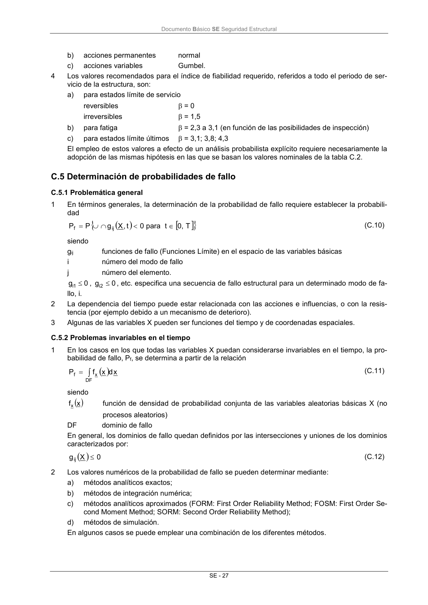

DB-SE · C.5 Determinación de probabilidades de fallo · versión 2019-12-20 · capa oficial
Formatos: JSON compacto · Markdown · PDF fuente
Ámbito del documento · texto del ámbito · documento y tablas
ID técnico a0067 · PDF pág. 33-34 · jerarquía no validada por persona · contrastado con el literal de la página 33 (candidato tipográfico); no validado por persona · padre: raíz
C.5 Determinación de probabilidades de fallo C.5.1 Problemática general 1 En términos generales, la determinación de la probabilidad de fallo requiere establecer la probabili- dad T 0, t para 0 t, X g P P ij f (C.10) siendo gij funciones de fallo (Funciones Límite) en el espacio de las variables básicas i número del modo de fallo j número del elemento. 0 g1i , 0 g 2 i , etc. especifica una secuencia de fallo estructural para un determinado modo de fa- llo, i. 2 La dependencia del tiempo puede estar relacionada con las acciones e influencias, o con la resis- tencia (por ejemplo debido a un mecanismo de deterioro). 3 Algunas de las variables X pueden ser funciones del tiempo y de coordenadas espaciales. C.5.2 Problemas invariables en el tiempo 1 En los casos en los que todas las variables X puedan considerarse invariables en el tiempo, la pro- babilidad de fallo, Pf, se determina a partir de la relación DF x f x d x f P (C.11) siendo x fx función de densidad de probabilidad conjunta de las variables aleatorias básicas X (no procesos aleatorios) DF dominio de fallo En general, los dominios de fallo quedan definidos por las intersecciones y uniones de los dominios caracterizados por: 0 X gij (C.12) 2 Los valores numéricos de la probabilidad de fallo se pueden determinar mediante: a) métodos analíticos exactos; b) métodos de integración numérica; c) métodos analíticos aproximados (FORM: First Order Reliability Method; FOSM: First Order Se- cond Moment Method; SORM: Second Order Reliability Method); d) métodos de simulación. En algunos casos se puede emplear una combinación de los diferentes métodos. Documento Básico SE Seguridad Estructural SE - 28 C.5.3 Transformación de problemas variables en problemas invariables en el tiempo 1 Se pueden distinguir dos tipos de problemas variables en el tiempo: a) fallos debidos a una sobrecarga; b) fallos por acumulación de daños (por ejemplo fatiga, corrosión). La dependencia del tiempo se debe a la variabilidad en el tiempo de las acciones e influencias y/o de la resistencia (mecanismos de deterioro). En general, las acciones, influencias o resistencias que sean variables en el tiempo, se deben re- presentar a través de procesos estocásticos. 2 En el caso de un fallo debido a una sobrecarga, el proceso puede ser sustituido por una distribución probabilista representando la incertidumbre para el periodo de tiempo para el que se debe determi- nar la probabilidad de fallo. A estos efectos, el valor medio se podrá adoptar como el valor máximo esperado en el periodo de referencia. Para la incertidumbre aleatoria se podrá adoptar la correspondiente al valor máximo es- perado. 3 La función empleada para describir un fallo por fatiga se podrá expresar, por ejemplo, en los térmi- nos de las curvas SN y de la regla de Palmaren-Miner. De esta manera, y si se refiere a un deter- minado periodo de tiempo, la función es invariable en el tiempo.

PDF fuente redistribuible: copia fiel enlazada en esta página (SHA256 verificado).